Den Gleichungsparser bedienen
Bedienseite, Stand 06.10.2026. Wie man ein Modell öffnet und ansieht, einen Einzellauf rechnet und verfolgt, Betriebspunkte im Stapel und Ablaufskripte rechnet, ein Modell diagnostiziert, abgelegte Läufe auswertet und ein Kennfeld abfährt. Die Bilder sind Bildschirmfotos der App mit zwei frei erfundenen Beispielmodellen: einem einfachen Gasturbinen-Kreisprozess als NFML-Flowsheet und einem Verdichterkennfeld als CAS-Ersatzmodell.
Das Fenster
Die App öffnet man im Menü Anwendungen mit .cas-Datei öffnen… oder mit Alt+C. Solange kein Modell geladen ist, steht rechts nur ein Hinweis; die Reiter erscheinen mit dem ersten Modell.
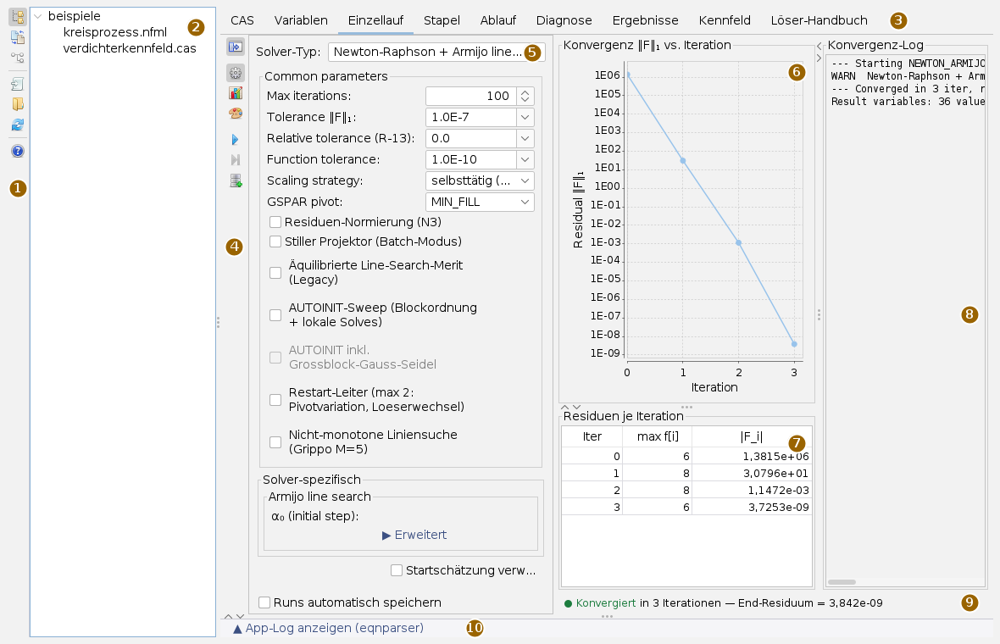
Die Reiter heißen CAS (Modelltext mit Unterreitern), Variablen, Einzellauf, Stapel, Ablauf, Diagnose, Ergebnisse, Kennfeld und Löser-Handbuch. Alle Trennlinien lassen sich verschieben. Der Streifen ganz unten klappt ein Protokoll auf, das nur die Meldungen dieser App zeigt; zieht man es klein, klappt es von selbst wieder zu. Die App hat für die Arbeit keine eigenen Fenster; Dateiauswahl, Fehlermeldungen und die Rückfragen vor dem Löschen und Speichern erscheinen als Dialog.
Die Leiste der App
Die Knöpfe tragen nur Symbole; was sie tun, steht im Tooltip. Die oberen drei schalten links zwischen dem Arbeitsverzeichnis und zwei Übersetzungskarten um, der Bereich lässt sich auch ganz zuklappen. Die unteren gelten für das Modell und die Hilfe.
| Symbol | Tooltip | Was geschieht |
|---|---|---|
| Arbeitsverzeichnis ein-/ausblenden | Den Baum mit den Modellen zeigen oder den Bereich zuklappen. | |
Übersetzen eines Steuerdecks (.mdl) nach NFML | Karte zum Übersetzen von Modellen eines anderen Simulationssystems, siehe unten. | |
Übersetzen eines Blockschaltbild-Modells (.mdl) nach NFML | Zweite Übersetzungskarte, siehe unten. | |
| Modell öffnen… | Eine .cas- oder .nfml-Datei wählen. Ihr Ordner wird zum Arbeitsverzeichnis. | |
 | Arbeitsverzeichnis wählen | Einen Ordner wählen; der Baum zeigt die Modelle darin. |
| Arbeitsverzeichnis neu laden | Den Baum neu einlesen, etwa nach einer Übersetzung. | |
 | Hilfe: öffnet die Bedienseite dieser App in der Doku (wie F1) | Diese Seite in der Doku-App. |
Ein Modell öffnen
- Mit Arbeitsverzeichnis wählen einen Ordner wählen. Der Baum zeigt alle
.cas- und.nfml-Dateien darin, auch in Unterordnern bis zur achten Ebene; Ordner ohne Modell und versteckte Ordner fehlen. Steuerdecks, die eine der beiden Übersetzungskarten versteht, erscheinen ebenfalls. - Ein Modell im Baum anklicken. Es wird im Hintergrund gelesen und gebunden; danach erscheinen die Reiter, und der Reiter CAS zeigt den Text.
- Alternativ Modell öffnen…: Die Datei wird geladen und ihr Ordner zum Arbeitsverzeichnis.
Welcher Parser liest, entscheidet die Endung: .nfml geht durch den NFML-Pfad mit Flowsheet, alles andere durch den CAS-Parser. INCLUDE-Zeilen und Kennfeldzeilen werden relativ zur Modelldatei aufgelöst; angezeigt wird der Dateitext, gerechnet wird mit dem aufgelösten. Beim Laden eines anderen Modells wird ein laufender Einzellauf abgebrochen und das letzte Ergebnis verworfen. Zu jedem Modell legt die App daneben eine Ergebnisablage an (siehe Dateien). Die Syntax der beiden Formate steht in der CAS-Syntax und der NFML-Syntax.
Das Modell ansehen
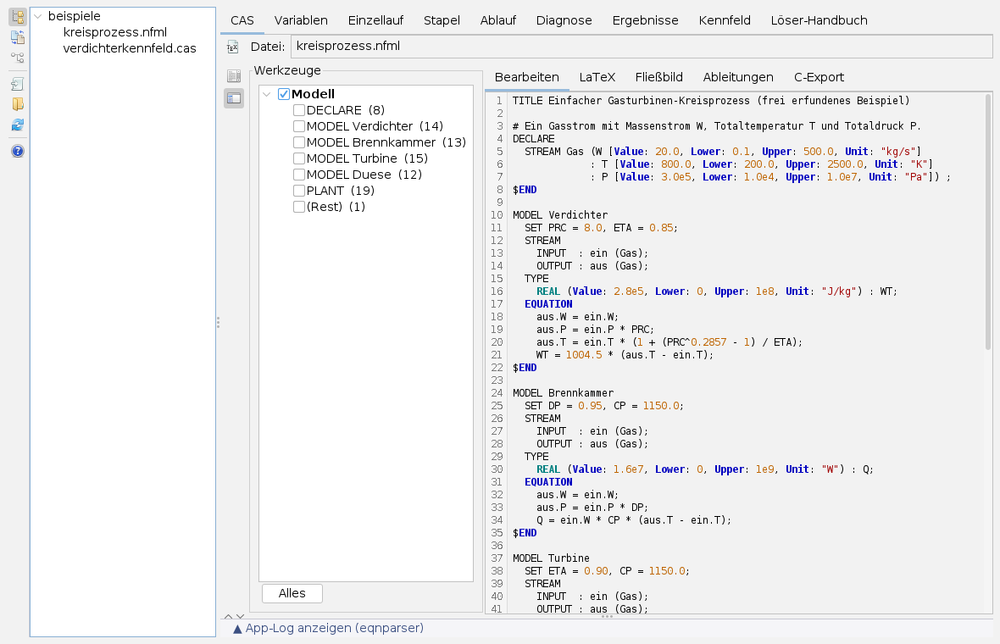
Der Unterreiter Bearbeiten zeigt den Modelltext mit Syntaxfärbung und Zeilennummern. Der Text ist schreibgeschützt: geändert wird das Modell in der Datei, danach im Baum neu anklicken. Die schmale Leiste links öffnet zwei Karten:
| Symbol | Karte | Was sie tut |
|---|---|---|
 | Ansicht | Zeilennummern ein und aus, Schriftart (nur dicktengleiche) und Schriftgröße. |
| Struktur | Die Blöcke des Modells (bei NFML DECLARE, MODEL, PLANT …, bei CAS die Kommentar-Banner). Angehakte Blöcke werden allein gezeigt; die Zeilennummern bleiben die der Datei, damit Meldungen des Parsers passen. Alles hebt die Auswahl auf. Gerechnet wird immer mit dem ganzen Modell. |
Der Knopf neben dem Dateifeld bereitet die Gleichungen als Formeln auf und wechselt in den Unterreiter LaTeX. Er legt zugleich eine HTML-Datei <modell>-gleichungen.html neben das Modell, wenn der Ordner beschreibbar ist.
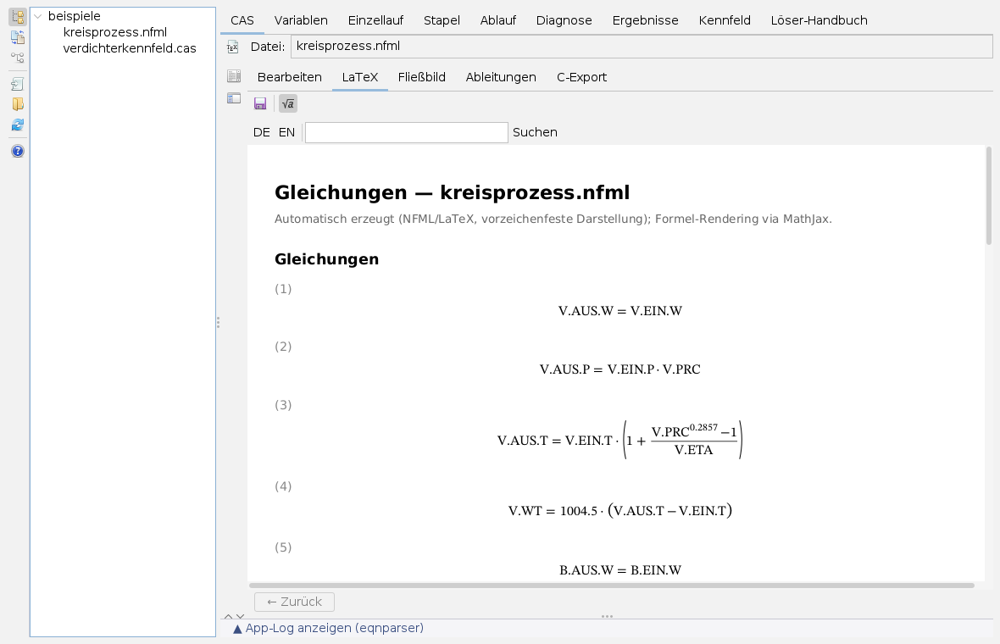
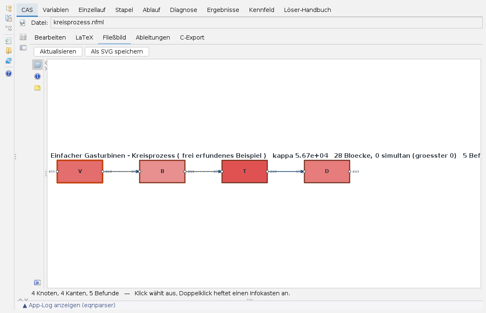
Im LaTeX-Reiter speichert  die Formelseite als HTML-Datei an einen frei gewählten Ort; schaltet zwischen den in der Deklaration angegebenen Formelzeichen (
die Formelseite als HTML-Datei an einen frei gewählten Ort; schaltet zwischen den in der Deklaration angegebenen Formelzeichen (Latex="…") und den Variablennamen um.
Das Fließbild gibt es nur für NFML-Modelle mit Flowsheet; flache Modelle haben keine Verschaltung. Es zeigt die Bausteine als Blöcke und die Ströme als Kanten, gefärbt nach den Befunden einer Diagnose am Startpunkt; dafür muss nicht gelöst werden. Ein Klick wählt einen Block, ein Doppelklick heftet einen Infokasten an. Die Karten am Rand des Bildes blenden Ebenen ein und aus (Einheiten, Ströme, Kopplungen, Gleichungen), zeigen die Angaben zum gewählten Block und stellen ein, welche Rechenstände der Infokasten vergleicht: Startpunkt, Lösung des letzten Laufs und abgelegte Läufe, mit einer Abweichungsspalte. Als SVG speichern schreibt das Bild samt Kästen. Mehr zum Bild auf der Seite framework-flowsheet.
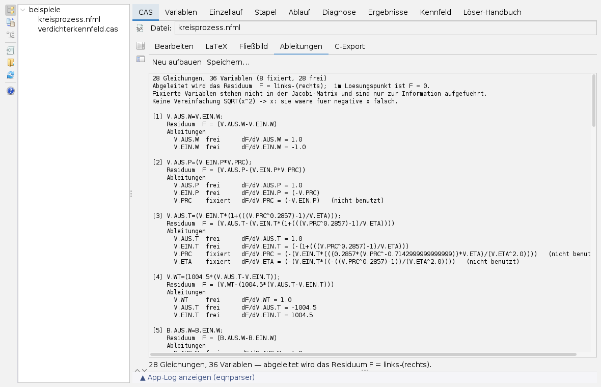
Die Unterreiter Ableitungen und C-Export bauen sich beim Wechsel auf den Reiter selbst auf; Neu aufbauen bzw. Erzeugen wiederholt das. Speichern… legt die Ableitungen als Textdatei ab, beim C-Export Kopf- und Quelldatei in ein gewähltes Verzeichnis. Was sich nicht nach C übersetzen lässt, steht als Kommentar im Quelltext und in der Statuszeile; das System ist dann unvollständig. Grundlage beider Reiter ist der letzte Lauf, sonst das geladene Modell.
Variablen
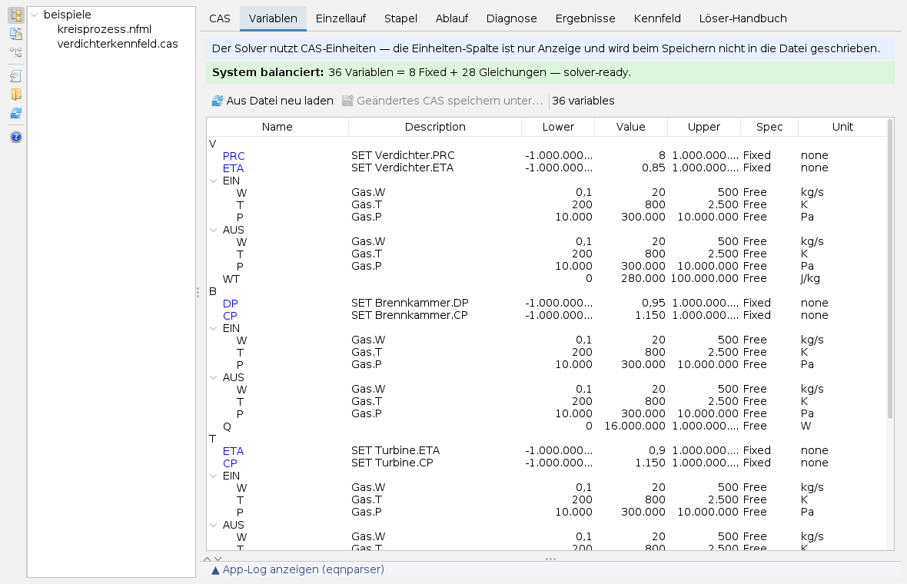
Die Tabelle gliedert die Variablen nach Bausteinen und Strömen und zeigt Beschreibung, untere Grenze, Wert, obere Grenze, Fixed oder Free und Einheit. Die Zeile darüber zählt Variablen, fixierte Variablen und Gleichungen und meldet, ob das System quadratisch ist, sowie Parserfehler. Grenzen, Wert, Status und Beschreibung lassen sich in der Tabelle ändern; Einzellauf und Stapel rechnen mit diesem bearbeiteten Modell. In der Einheiten-Spalte lässt sich eine andere Anzeige-Einheit wählen; der Löser rechnet weiter in den Einheiten der Datei.
Aus Datei neu laden verwirft die Änderungen. Geändertes CAS speichern unter… wird frei, sobald etwas geändert ist, und schreibt die Werte in eine neue Datei; Variablen in Langform-Deklaration findet es nicht und fragt deshalb nach.
Einen Einzellauf rechnen
- Reiter Einzellauf. Die Leiste (4) öffnet drei Karten:
 Löser-Einstellungen,
Löser-Einstellungen,  Diagramm-Optionen und
Diagramm-Optionen und  Serien-Stil des Konvergenzbilds; der oberste Knopf blendet den Kartenbereich aus.
Serien-Stil des Konvergenzbilds; der oberste Knopf blendet den Kartenbereich aus. - In der Karte Löser-Einstellungen unter Solver-Typ das Verfahren wählen. Vorgabe ist Newton mit dünn besetzter LU-Zerlegung und Armijo-Liniensuche. Darunter stehen die gemeinsamen Einstellungen (Iterationen, Toleranzen, Skalierung, Pivotwahl, Startwert-Hilfen) und die des gewählten Verfahrens; Erweitert klappt weitere auf. Jedes Feld erklärt sich im Tooltip.
- Solver starten. Der Lauf geht im Hintergrund; das Konvergenzbild (6) trägt je Iteration die Summe der Residuenbeträge ein, die Tabelle (7) die größte Gleichung und den Betrag, das Log (8) Start, Warnungen und Ende.
- Die Ergebniszeile (9) meldet Konvergiert, Konvergiert mit Schranken-Verletzung samt den Variablen außerhalb ihrer Grenzen, NICHT konvergiert, einen Fehler oder den Abbruch.
- Run in DB speichern ist nach einem konvergierten Lauf frei und legt ihn in der Ergebnisablage des Modells ab. Mit Runs automatisch speichern unter der Karte geschieht das nach jedem abgeschlossenen Lauf, auch einem nicht konvergierten.
 Stopp hält den Löser nicht sofort an: Er rechnet seine Iteration zu Ende, dann wird das Ergebnis verworfen. Der Einzellauf rechnet auf einer Kopie des Modells; die Werte im Reiter Variablen bleiben die Startwerte. Die Verfahren selbst beschreiben die Seiten Newton-Verfahren und Fortsetzung.
Stopp hält den Löser nicht sofort an: Er rechnet seine Iteration zu Ende, dann wird das Ergebnis verworfen. Der Einzellauf rechnet auf einer Kopie des Modells; die Werte im Reiter Variablen bleiben die Startwerte. Die Verfahren selbst beschreiben die Seiten Newton-Verfahren und Fortsetzung.
Betriebspunkte im Stapel
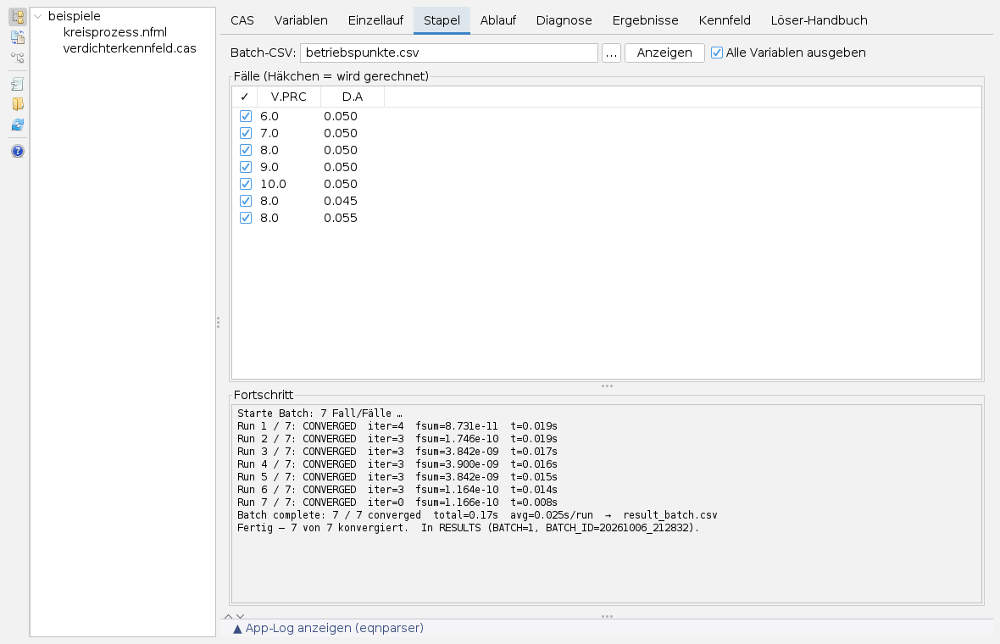
Ein Stapel rechnet dasselbe Modell mit verschiedenen Zahlen. Die Eingabe ist eine CSV-Datei: die Kopfzeile nennt die Variablen, jede weitere Zeile einen Fall; Zeilen mit # oder // sind Kommentar, getrennt wird mit Komma.
# Betriebspunkte V.PRC, D.A 6.0, 0.050 8.0, 0.045
- Die Datei mit … wählen oder den Pfad eintragen und Anzeigen drücken. Die Fälle erscheinen als Tabelle; das Häkchen vor einer Zeile entscheidet, ob sie gerechnet wird.
- Batch ausführen. Der Fortschritt zeigt je Fall Status, Iterationen, Residuum und Zeit; ein gescheiterter Fall hält den Stapel nicht an. Abbrechen geht über den Knopf im Wartehinweis.
Der Stapel rechnet mit den Einstellungen der Karte Löser-Einstellungen. Das Ergebnis eines Falls ist der Startwert des nächsten (Warmstart); Nur Kaltstarts lässt jeden Fall bei den Startwerten des Modells beginnen und macht ihn damit unabhängig von der Reihenfolge. Alle Variablen ausgeben schreibt alle Größen heraus, nicht nur die Eingaben und freien Variablen. Jeder Fall landet in der Ergebnisablage, alle mit derselben Stapelkennung; zusätzlich schreibt der Läufer eine Datei result_batch.csv.
Ablaufskripte
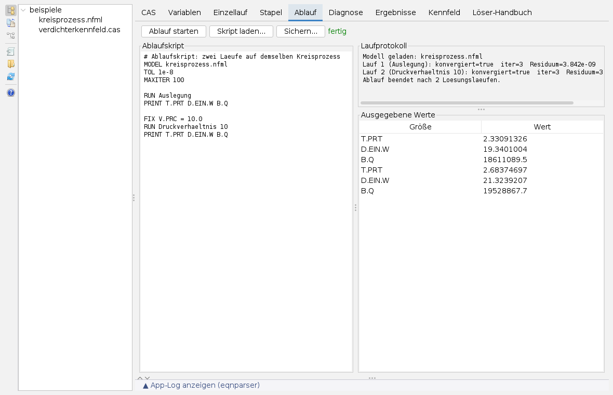
Ein Ablaufskript rechnet mehrere Läufe auf einem System mit wechselnder Spezifikation; der konvergierte Zustand ist der Startwert des nächsten Laufs. Das unterscheidet es vom Stapel, der denselben Fall mit anderen Zahlen rechnet. Eine Anweisung je Zeile, # leitet einen Kommentar ein:
| Anweisung | Wirkung |
|---|---|
MODEL datei | Modell laden (einmal, zuerst). Ein relativer Pfad gilt vom Startverzeichnis des Programms aus, nicht vom Arbeitsverzeichnis der App. |
TOL, MAXITER, RELAX, SOLVER | Toleranz, Iterationsgrenze, Relaxation, Verfahren. |
ONFAIL STOP | CONTINUE | Bei einem nicht konvergierten Lauf abbrechen oder weitermachen. |
FIX x = wert, FIX x, FREE x | Variable auf einen Wert oder auf ihren gelösten Wert festsetzen, freigeben. FIX und FREE paarweise denken, sonst ist das System über- oder unterbestimmt. |
SET x = wert, TRANSFER a -> b | Wert setzen; gelösten Wert übertragen. |
RUN [name], PRINT x y … | Lösen; Werte in die Tabelle rechts unten schreiben. |
LOOP n [UNTIL x tol] … ENDLOOP | Wiederholen, bis die Änderung von x unter tol fällt. |
Ablauf starten führt das Skript aus; das Laufprotokoll nennt jeden Lauf mit Konvergenz, Iterationen und Residuum, Fehler stehen dort mit !!. Skript laden… ersetzt den Text, Sichern… speichert ihn; gesichert wird das Skript, nicht das Ergebnis. Die vollständige Sprache steht in der NFML-Syntax.
Diagnose
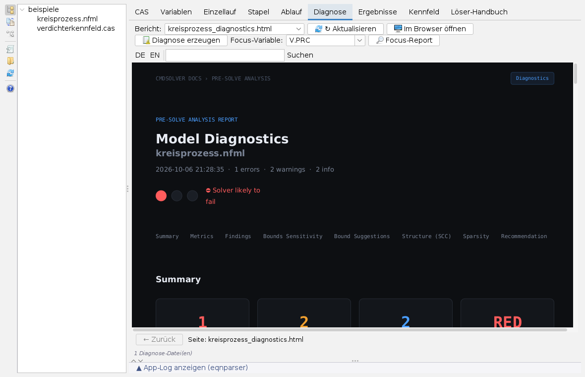
Diagnose erzeugen prüft das Modell am Startpunkt (oder nach einem Lauf dessen Stand): Kondition, Residuen, Grenzen und die Zerlegung in stark zusammenhängende Blöcke. Der Bericht landet als <modell>_diagnostics.html neben dem Modell und wird gleich angezeigt. Für eine einzelne Größe wählt man sie unter Focus-Variable und drückt Focus-Report; das ergibt <modell>_focus_<variable>.html.
Die Auswahl Bericht listet alle HTML-Berichte neben dem Modell, auch die Formelseite aus dem LaTeX-Reiter und Berichte, die auf der Kommandozeile entstanden sind; Aktualisieren sucht neu, und beim Wechsel auf den Reiter geschieht das ohnehin. Im Browser öffnen zeigt den Bericht im Systembrowser. Die Diagnose bewertet den Startpunkt, nicht die Lösung: Im Beispiel sagt sie Schwierigkeiten voraus, und der Lauf konvergiert trotzdem in drei Schritten. Die Verfahren dahinter stehen auf der Seite Zerlegung.
Abgelegte Läufe auswerten
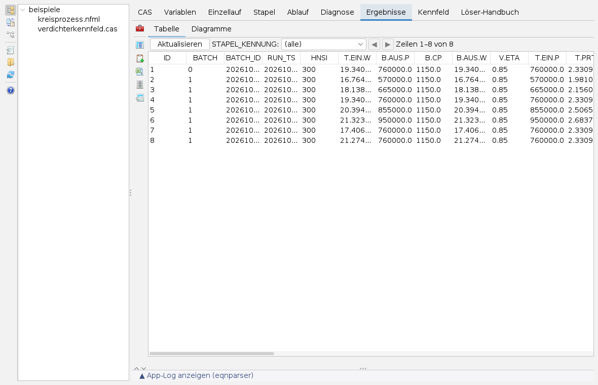
Die Tabelle zeigt alle abgelegten Läufe des geladenen Modells: ID, BATCH (0 Einzellauf, 1 Stapel), BATCH_ID (Stapelkennung), RUN_TS (Zeitpunkt), HNSI (Status: 300 konvergiert, 1300 konvergiert mit verletzten Grenzen, andere Werte nicht konvergiert) und dahinter je Variable eine Spalte. STAPEL_KENNUNG filtert auf einen Stapel, die Pfeile blättern seitenweise. Der Unterreiter Diagramme trägt die gezeigten Spalten gegeneinander auf.
Der Knopf oben links klappt die Werkzeugleiste auf:
| Symbol | Karte | Was sie tut |
|---|---|---|
 | Angezeigte Spalten | Nur gewählte Variablen zeigen (die ID bleibt immer); Alle zeigen hebt das auf. |
| Zwischenablage | Die gezeigten Daten tabulatorgetrennt mit Kopfzeile kopieren, direkt in eine Tabellenkalkulation einfügbar. | |
| CSV-Export | Die gezeigten Daten als CSV-Datei speichern. | |
| DB-Werkzeuge | Markierte Zeilen, einen ganzen Stapel oder alles löschen, jeweils nach Rückfrage. Gelöscht ist gelöscht. | |
| Referenzvergleich | Eine zweite Tabelle (CSV oder H2) über einen Schlüssel zuordnen und daraus Spalten berechnen, etwa {{ETA}} - {{ref:ETA}}; das Ergebnis geht an die Diagramme und wahlweise in eine neue Tabelle. |
Ein Kennfeld abfahren
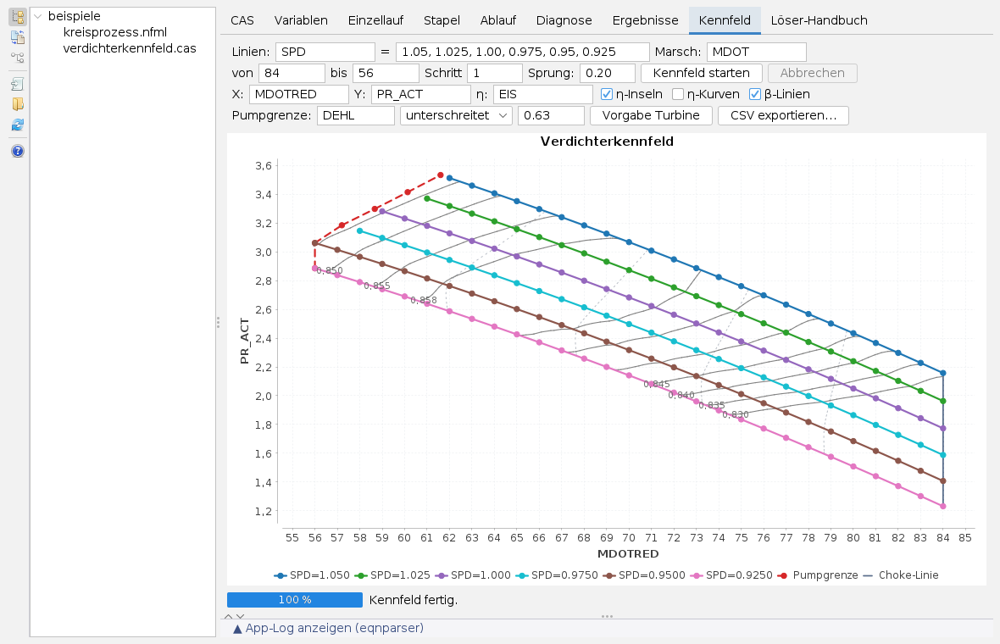
Der Reiter rechnet ein Verdichter- oder Turbinenkennfeld Punkt für Punkt mit dem geladenen CAS-Modell. Die Felder bedeuten:
| Feld | Bedeutung |
|---|---|
| Linien | Die äußere Variable (etwa die Drehzahl) und ihre Werte, kommagetrennt; je Wert eine Linie. |
| Marsch, von, bis, Schritt | Die innere Variable, entlang der jede Linie abgefahren wird. |
| Sprung | Relative Schwelle für den Warmstart (0 schaltet ab). Springt die Lösung stärker, wird der Punkt vom Startwert des Modells aus neu gerechnet; ein gescheiterter Punkt bekommt ebenfalls einen Kaltstart. |
| X, Y, η | Die aufgetragenen Größen; X leer heißt: die Marschvariable. |
| η-Inseln, η-Kurven, β-Linien | Linien gleichen Wirkungsgrads, Wirkungsgrad über Durchsatz auf zweiter Achse, Hilfslinien zwischen Choke (β = 0) und Pumpgrenze (β = 1). |
| Pumpgrenze | Kriteriumsgröße (ein Skalar oder der Vorsatz eines Feldes, dann zählt das Minimum), Richtung (unterschreitet beim Verdichter, überschreitet bei der Turbine) und Grenzwert. Leer: kein Kriterium. |
Kennfeld starten rechnet im Hintergrund, Linie für Linie mit Warmstart; konvergierte Punkte erscheinen sofort im Bild. Ein gescheiterter Punkt oder die Verletzung des Kriteriums beendet die Linie. Am Ende verbindet die App die letzten Punkte zur Pumpgrenze, zieht die Choke-Linie und legt Inseln und β-Linien darüber. Abbrechen hält an, CSV exportieren… schreibt alle Punkte; das Mausrad zoomt im Bild. Vorgabe Turbine stellt die Felder auf ein Turbinenkennfeld um.
Modelle anderer Systeme übersetzen
Zwei Karten der Leiste übersetzen Modelle anderer Simulationssysteme in NFML-Decks aus einer passenden Bausteinbibliothek: die eine Steuerdecks eines Leistungsrechnungssystems, die andere Blockschaltbild-Modelle (.mdl, Textformat oder Textpaket). Der Baum des Arbeitsverzeichnisses erkennt solche Modelle; ein Klick darauf öffnet die passende Karte. Beide Karten sind höchstens 360 px breit:
- Oben stehen das Modell, die Begleitdateien (Eingaben, Laufskript, Setup-Skript), die Bibliothek und das Zieldeck; die Karte schlägt sie vor, die Ordner-Knöpfe und Felder ändern sie.
- Übersetzen schreibt das Deck, bindet es und öffnet es wie jedes Modell. Rechnen bzw. Auslegung rechnen löst es zusätzlich; bei Steuerdecks vergleicht die Karte mit einer Soll-Tabelle aus der Nähe und rechnet mit Nachrechnen die gewählten Fälle.
- Ergebnis, Gleichungszahl, Befunde und Abweichungen stehen im Protokoll der Karte.
Dateien neben dem Modell
| Datei | Entsteht durch |
|---|---|
<modell>.mv.db | Ergebnisablage (H2), angelegt beim Laden; Tabelle RESULTS mit allen gespeicherten Einzel- und Stapelläufen. |
<modell>-gleichungen.html | Knopf TeX im Reiter CAS. |
<modell>_diagnostics.html, <modell>_focus_<variable>.html | Diagnose erzeugen, Focus-Report. |
result_batch.csv | Stapellauf (im Startverzeichnis des Programms). |
Lässt sich die Ergebnisablage nicht öffnen, fragt Run in DB speichern nach einer H2-Datei und legt den Lauf dort als eigene Tabelle ab. Beim Sichern des Arbeitsbereichs merkt sich die App das Modell, das Arbeitsverzeichnis und alle 39 Löser-Einstellungen; beim Wiederherstellen wird das Modell neu gelesen und seine Ergebnisablage geöffnet.
Hilfe und Löser-Handbuch
Der Hilfeknopf der Leiste und F1 öffnen diese Seite in der Doku-App. Der Reiter Löser-Handbuch enthält die mitgelieferte Dokumentation des Gleichungslösers in Deutsch und Englisch, 28 Seiten je Sprache: Einstieg über Kommandozeile und Programmierschnittstelle, Fehlersuche, Beispielmodelle, die einzelnen Verfahren, Optionen, Stapelbetrieb, Parsersyntax und eingebaute Funktionen. Die Theorie dazu fasst die Seite envisionz-commandline-eqnparser mit ihren Unterseiten zusammen.
Grenzen
- Der Modelltext ist in der App nur zu lesen; bearbeitet wird die Datei.
- Stopp wirkt nach der laufenden Iteration; das Ergebnis eines abgebrochenen Laufs wird verworfen.
- Nach einem Einzellauf zeigt der Reiter Variablen weiter die Startwerte; die Lösung steht in der Ergebnisablage, im Fließbild und in der Diagnose.
- Das Kennfeld liest nur CAS-Modelle.
- Einige Beschriftungen der Löser-Karte und des Variablen-Reiters sind in beiden Sprachen englisch, einige Meldungen der Rechenkerne (Protokoll von Ablauf, Ableitungen, Diagnosebericht) in beiden Sprachen deutsch bzw. englisch.
Symbole: Fugue Icons von Yusuke Kamiyamane, Lizenz CC BY 3.0.